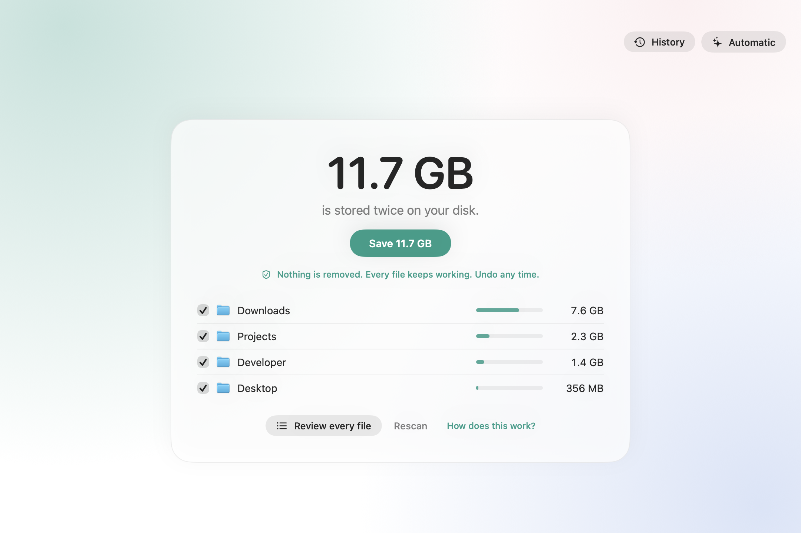

Get disk space back
without removing any files.
Your Mac keeps the same data many times over: the same node_modules in every project, the
same PyTorch in every virtualenv, the same video in two folders. Twinfold stores it once. Every file stays where
it is and keeps working.
Free and open source · macOS 14 or later · Apple silicon and Intel

How it works
Twinfold uses APFS clones, the same feature Finder uses when you duplicate a file. Identical files end up pointing at one copy of the data. Change one later and only that file gets its own copy again; macOS handles it.
1. Scan
Finds files that are exactly the same, byte for byte. About a minute for a home folder with millions of files. Nothing changes while it looks.
2. See everything
By kind, by folder and file by file, with every copy's path and a live check that reads the files from disk. Untick anything; Twinfold remembers.
3. Save, and undo any time
Each file is compared again right before it changes. Every run is kept in History, so you can undo it later.
Free, and Pro
Twinfold
- Unlimited scanning and saving
- Live check and History with undo
- Command line tool
- Open source, MIT
Twinfold Pro
- Automatic: keeps your Mac deduplicated every day or week, while you're away from it
- Menu bar item with what it saved
- Up to 3 Macs, no subscription
Like it but don't need Pro? Sponsor it on GitHub.
Command line
twinfold scan # what could be saved, changes nothing twinfold reclaim --dry-run # list exactly what would change twinfold reclaim # store identical files once twinfold undo # give every file its own copy again
Questions
Does it delete anything?
No file disappears. Each duplicate is replaced by a clone of its twin with the same name, contents, dates and permissions, so it opens exactly as before. What goes away is the second copy of the same data on disk.
Is it safe for code projects and virtualenvs?
Yes. Clones are ordinary files to every program. Twinfold was tested by folding PyTorch virtualenvs and Node projects and running them afterwards.
What does it never touch?
Photos libraries, iCloud Drive and other cloud folders, system files, files you can't write, locked files, and anything you untick.
Why does macOS warn the first time I open it?
The app isn't notarized by Apple yet. Open it once, then choose Open Anyway in System Settings, Privacy & Security.
Does deleting one copy free its space?
Only once every twin is gone, since the others still use that data. Finder shows each file's full size either way.